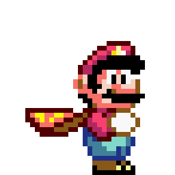

Mario Jump
Pule os obstáculos com Espaço, seta para cima ou o botão Pular. Use P para pausar.
Pontos: 0
Recorde neste navegador: 0



Pronto para começar.
Projeto educacional de fã, sem afiliação à Nintendo. Personagens e marcas pertencem aos respectivos titulares.